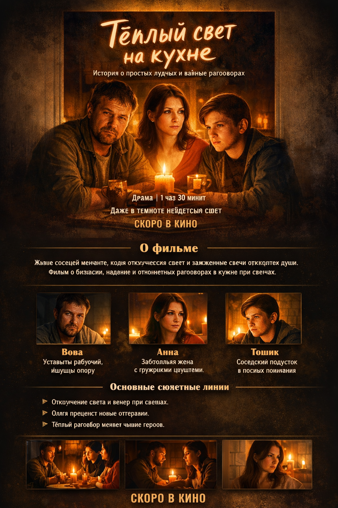
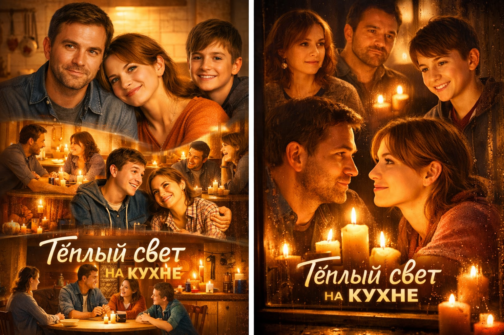

История о простых людях и важных разговорах
Название: Тёплый свет на кухне
Жанр: Драма, бытовая история
Главная тема: Влияние простых разговоров и близости на жизнь людей
Продолжительность: 1 час 30 минут
Актуальность: Фильм показывает важность внимательного отношения к близким и ценности маленьких радостей. Сюжет о том, как ежедневные события и диалоги могут менять человека.
1. Завязка: обычная жизнь Вовы и Анны, появление Тошика.
2. Развитие: приход Ольги, бытовые трудности и новые разговоры.
3. Кульминация: отключение света, откровенные беседы за свечами.
4. Развязка: герои осознают ценность простых моментов, жизнь меняется, возвращения к прежней пустоте нет.
Вова приходит домой, усталый после работы. Анна моет посуду, готовит чай. В подъезде слышен стук — это Тошик, который приходит поделиться школьными историями. Маленький бытовой момент становится началом близости и смеха.
Ольга приходит в гости, задаёт прямые вопросы, обсуждает одиночество и жизнь в доме. Вова узнаёт о возможных сокращениях на работе, но на кухне чувствует уют. Тошик становится ещё более частым гостем, создавая лёгкую атмосферу перемен.
Анна наблюдает за жизнью за окном, Тошик обращает внимание на новую кофеварку. Малые бытовые детали и совместные моменты делают дни героев более насыщенными и тёплыми.
Вдруг гаснет свет. Вова ставит свечи на стол, герои обсуждают страхи, сомнения и мечты. Перемены начинаются внутри каждого из них.
Несколько недель спустя герои живут внимательнее друг к другу, ценят простые радости и проводят больше времени вместе. Дом — это они и их тёплый свет.


На постере показаны главные герои Вова, Анна и Тошик в тёплом свете кухни. Также изображены сцены совместной жизни и бесед.